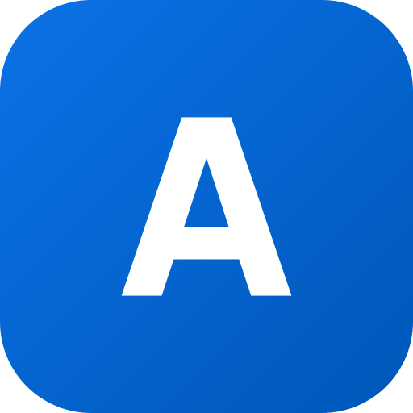

Amajing Player
Putar lagu dan video dari HP, YouTube, Google Drive, dan radio dalam satu aplikasi. Buat playlist, lalu bagikan ke teman cukup dengan satu link. Gratis.
Kenalan dulu
Amajing Player adalah pemutar musik dan video yang berjalan langsung dari browser. Tidak perlu daftar akun. Lagu yang kamu tambahkan otomatis tersimpan, jadi daftarnya masih ada saat aplikasi dibuka lagi.
Cara membuka
- Buka Chrome atau Edge versi terbaru, lalu kunjungi
amajing-grace-2026.github.io/MP3-MP4-Player - Tambahkan lagu dengan salah satu tombol: + Tambah Berkas, ▶ YouTube / Drive, atau 📻 Radio.
- Ketuk judul lagu di daftar untuk mulai memutar.
- Supaya lebih praktis, pasang sebagai aplikasi di HP (lihat Bagian 5).
Isi panduan
Mengenal tampilan
| Layar pemutar | Bagian atas. Menampilkan video, atau judul lagu bila yang diputar berupa audio. |
| Bilah kontrol | Play/Pause, penggeser posisi lagu, volume, dan layar penuh. |
| Tombol navigasi | Shuffle, Prev, Next, Repeat, kecepatan putar, dan Sleep Timer. |
| Bilah playlist | Pilih playlist, buat baru, ganti nama, hapus, dan 🔗 Bagikan. |
| Daftar lagu | Semua lagu dalam playlist aktif, lengkap dengan kotak pencarian. |
Menambah lagu
📁 File dari HP atau laptop
Memutar file musik atau video yang sudah ada di perangkatmu.
- Tekan + Tambah Berkas.
- Pilih satu atau banyak file sekaligus (MP3, MP4, M4A, WAV, OGG, FLAC).
- File langsung masuk ke daftar dan tersimpan otomatis.
▶ YouTube & Google Drive
Menambahkan video YouTube atau file lagu yang tersimpan di Google Drive, tanpa mengunduhnya.
- Tekan ▶ YouTube / Drive.
- Tempel link-nya, satu link per baris. Judul boleh ditulis setelah link, contoh:
https://drive.google.com/file/d/xxxx/view Lagu Kenangan - Tekan + Tambah ke Daftar.
📻 Radio online
Mendengarkan siaran radio langsung dari seluruh Indonesia dan dunia.
- Tekan 📻 Radio.
- Ketik nama stasiun atau jenis musik, misalnya Prambors, jazz, atau dangdut. Pilih 🇮🇩 Indonesia atau 🌐 Semua negara.
- Tekan stasiun yang diinginkan untuk memasukkannya ke daftar.
| Stasiun pilihan | Suara Surabaya 100 FM dan City Guide 911 FM Malang selalu tampil paling atas. |
| Link sendiri | Buka Punya link stream radio sendiri?, isi link stream (harus https) dan nama stasiun, lalu tekan + Tambah. |
Memutar lagu
🎚️ Tombol pemutar
| ▶ / ⏸ | Putar atau jeda. |
| Penggeser posisi | Geser untuk loncat ke bagian lagu tertentu. |
| 🔊 Volume | Tekan ikon speaker untuk membisukan, geser untuk mengatur keras-pelan. |
| ⛶ Layar penuh | Untuk menonton video dalam layar penuh. |
| ⏮ Prev / Next ⏭ | Lagu sebelumnya atau berikutnya. |
| 🔀 Shuffle | ON = urutan lagu diacak. |
| 🔁 Repeat | Tekan berulang: OFF → ALL (ulang seluruh daftar) → ONE (ulang satu lagu). |
| ⚡ Kecepatan | 0.5x sampai 2.0x. Berguna untuk rekaman kajian, kuliah, atau podcast. |
⏾ Sleep Timer
Musik berhenti sendiri, cocok untuk mendengarkan sebelum tidur.
- Tekan ⏾ Sleep Timer.
- Pilih 15 menit sampai 1,5 jam, atau Setelah lagu ini.
- Sisa waktunya tampil di tombol tersebut. Untuk membatalkan, pilih lagi ⏾ Sleep Timer.
🔒 Kontrol di layar kunci
Saat lagu diputar, judul lagu dan tombol Play/Pause, Prev, serta Next muncul di layar kunci HP dan di panel notifikasi. Kamu bisa mengganti lagu tanpa membuka aplikasi. Tombol media di headset Bluetooth juga ikut berfungsi.
⌨️ Pintasan keyboard (laptop)
| Spasi | Putar / jeda |
| ← → | Mundur / maju 5 detik |
| Shift + ← → | Lagu sebelumnya / berikutnya |
| ↑ ↓ | Volume naik / turun |
| M | Bisukan / suarakan |
Playlist
Kamu bisa punya banyak playlist, misalnya "Lagu Santai", "Olahraga", atau "Kajian". Setiap playlist menyimpan daftar lagunya sendiri.
🗂️ Bilah playlist
| Pilih playlist | Ketuk nama playlist untuk berpindah ke playlist lain. |
| ＋ Baru | Membuat playlist kosong dengan nama yang kamu tentukan. |
| ✏️ | Mengganti nama playlist yang sedang dibuka. |
| 🗑 | Menghapus playlist beserta semua lagu di dalamnya. Tidak bisa dibatalkan. |
| 🔗 Bagikan | Membuat link playlist untuk dikirim ke teman (lihat Bagian 4). |
⋮ Menu setiap lagu
Tekan tombol ⋮ di samping judul lagu untuk membuka pilihan berikut:
| ✏️ Ganti judul | Mengubah judul yang tampil di daftar. |
| Salin ke playlist | Menyalin lagu ke playlist lain, atau ke ＋ Playlist baru… |
| ☁️ Upload ke Drive | Khusus lagu bertanda HP: meng-upload lagu ke Google Drive milikmu. |
| 🔁 Ganti link Drive | Khusus lagu bertanda HP: mengganti lagu dengan link Google Drive yang sudah kamu punya. |
Tombol ✕ di ujung kanan menghapus lagu dari daftar.
🔍 Cari & rapikan
- Ketik di kotak Cari judul lagu atau video… untuk menyaring daftar.
- Kosongkan Daftar menghapus semua lagu di playlist yang sedang dibuka. Playlist lain tidak ikut terhapus.
Berbagi playlist
Kirim playlist ke teman lewat WhatsApp atau media sosial. Temanmu cukup membuka link-nya, tanpa perlu daftar apa pun.
🔗 Membagikan link
- Buka playlist yang ingin dibagikan, lalu tekan 🔗 Bagikan.
- Pilih aplikasi tujuan (WhatsApp, Telegram, dan lain-lain). Di laptop, link langsung tersalin, jadi tinggal ditempel.
Yang diterima temanmu
- Temanmu membuka link, lalu muncul kotak berisi nama playlist dan jumlah lagunya.
- Tekan 💾 Simpan & putar. Playlist tersimpan di aplikasinya dan langsung diputar. Pilih Abaikan bila tidak jadi.
☁️ Supaya lagu dari HP ikut terbagikan
Aplikasi bisa meng-upload lagu bertanda HP ke Google Drive milikmu sendiri, lalu mengatur foldernya agar bisa didengar siapa saja yang punya link.
- Tekan 🔗 Bagikan. Kalau ada lagu dari HP, muncul panel ☁️ Upload lagu dari HP ke Google Drive.
- Centang lagu yang ingin di-upload.
- Pilih ➕ Upload ke folder baru (nama folder bisa diubah), atau 📁 Pilih folder yang ada di Drive-mu.
- Masuk dengan akun Google, lalu tekan Izinkan. Ini hanya diminta sekali selama aplikasi terbuka.
- Tunggu sampai semua lagu bertanda ✅, lalu tekan 🔗 Bagikan sekarang.
| Tanpa upload | Tekan Bagikan tanpa lagu HP untuk membagikan lagu yang sudah online saja. |
| Satu lagu saja | Pakai menu ⋮ → ☁️ Upload ke Google Drive saya. |
| Kuota | Lagu memakai ruang Google Drive milikmu (gratis 15 GB). |
Pasang aplikasi
Amajing Player bisa dipasang seperti aplikasi biasa. Ikonnya muncul di layar utama dan aplikasinya terbuka di jendela sendiri tanpa bilah alamat.
Android
Buka di Chrome, tekan menu ⋮ di kanan atas, lalu pilih Instal aplikasi (atau Tambahkan ke layar utama → Instal).iPhone / iPad
Buka di Safari, tekan tombol Bagikan (kotak dengan panah ke atas), lalu pilih Tambah ke Layar Utama.Laptop (Chrome / Edge)
Tekan ikon instal di ujung kanan bilah alamat, lalu pilih Instal.Hanya muncul "pintasan"?
Update Chrome ke versi terbaru lewat Play Store, lalu coba lagi.Kalau ada kendala
Lagu dari HP hilang dari daftar
Lagu tersimpan di penyimpanan browser. Kalau data situs atau riwayat browser dihapus, lagunya ikut terhapus dan perlu ditambahkan lagi.
Lagu Google Drive tidak mau diputar
Pastikan file dibagikan ke "Siapa saja yang memiliki link" dan ukurannya di bawah sekitar 100 MB. Coba juga putar ulang saat sinyal internet lebih stabil.
Musik berhenti saat layar HP mati
Beberapa HP menghemat baterai dengan menutup aplikasi di latar belakang. Pasang Amajing Player sebagai aplikasi, lalu di pengaturan baterai HP pilih Tidak dibatasi untuk Chrome.
Radio tidak bersuara
Stasiun mungkin sedang tidak siaran. Coba stasiun lain, atau cari dengan nama yang berbeda.
Punya saran atau menemukan kesalahan?
Tekan 💬 Kirim masukan di bagian bawah aplikasi. Setiap masukan dibaca.
Suka dengan aplikasi ini? Dukung pengembangannya lewat ☕ Traktir kopi di saweria.co/amajinglabs